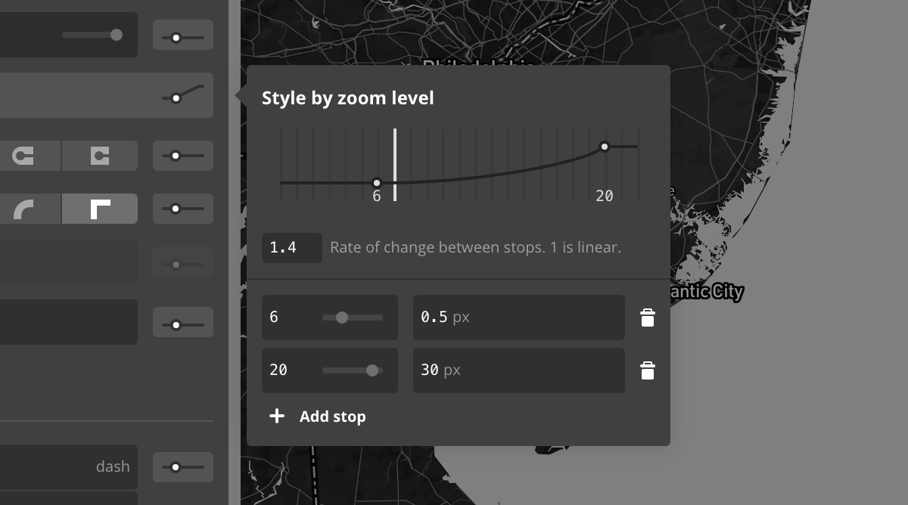

How we got here
Tom MacWright
@tmcw / @Mapbox
macwright.org/presentations/jsgeo
History
TileMill
CartoCSS
Mapbox.js
Mapbox Studio Classic
Mapbox GL JS
Mapbox Studio
I've been working on this stuff for a long time. I've worked on projects
that took off, and projects that never saw the light of day. At this
juncture, I'm working on Mapbox Studio
and Mapbox GL JS as much as I can, and am honestly very optimistic about the
next few years in mapping.
This would suggest that I should just talk about Mapbox Studio and GL JS
and how cool they are.
Flashy demos: 0
But I'm going to take a guess that you like your demos on your own computer
rather than a projector, and since you're here you aren't just shopping for
technology, you're building it. So apologies if you're completely unsold:
I'm not going to try.
Instead
The logic, not the end-product
Map rendering
Transforming geographical data into representation
Why are maps so hard
The crux
Fancy file formats
Styling language syntaxGiven all of the hype you see in the mapping
industry, you might think that these are the parts that matter: that
vector tiles are fancier and faster and CartoCSS or MapCSS or Mapbox GL Style Spec
or JavaScript is the thing that unlocks all of this amazing potential
The crux
Mapbox Vector Tiles
Mapbox GL Style SpecAnd, yeah,
that stuff is cool and we've been working on it a lot, but the axis
of maps turns elsewhere.
Culling
selecting from a large quantity;
obtaining from a variety of sources
See also
search, caching, binning
The biggest improvement in map performance
is from what you choose not to draw
Unnecessary features, unnecessary details,
every place in the world other than the
one you're looking at
Let's begin
Phase 1
UNTILED WMS
Selection by a bounding box & dimensions.
Everything was generated from scratch.
Nothing was reused.See http://dev.openlayers.org/examples/wms-untiled.html for
an example of this
UNTILED WMS
&REQUEST=GetMap
&SRS=EPSG:3A4326
&BBOX=-32.52,20.03,34.97,53.78
&WIDTH=768&HEIGHT=384
Phase 2
Google-Style Tiles
Selection by tile coordinates.
Unlike coordinates, tiles are predictable.
Two users looking at Philadelphia see the same tiles.
Tiles are reused and cached.These tiles are called XYZ tiles
nowadays, and OpenStreetMap has the best specification for them: http://wiki.openstreetmap.org/wiki/Slippy_Map
It's a folksy spec with no real governing body, but it's worked out pretty fine because it's
so simple.
Google-Style Tiles
/6/12/5
This was a big deal.
Without tiles, we would be nowhere.
Phase 2.5
Tiles and Overlays
The era of Leaflet
- Tiled raster maps for complex base data
- Vectors atop in SVG, HTML, or Canvas
this is more or less right nowThe subtext is that we have vectors already,
and have had vector rendering in one form or another since the very early days
(fun fact that the earliest computer monitors were vector, and were super cool).
But the place where it sits in the mapping world is just short of "actually powering
a map": tech like SVG and Canvas is pretty neat but not good enough or fast
enough to render complex base maps.
Enter stage right: Vector Tiles
Vector is an overloaded term
there is vector data,
like GeoJSON or Shapefiles
Vector is an overloaded term
there is vector rendering,
like SVG, Canvas, or PostScript
Shoutout to PostScript
No, but seriously, PostScript is a true language nerd's language:
it's a turing-complete concatenative language that everyone just thinks
is for printers. It's hella cool
https://en.wikipedia.org/wiki/PostScript
Vector tiles are none of these things
Vector tiles
Non-visual, non-geographical efficient tiled data
Non-visual
Unlike SVG, they don't have style.
They don't have color or width.
Only points, lines, and polygons.
Non-visual
Unlike GeoJSON, they don't have coordinates.
Not latitude or longitude.
Only pixel offsets within tiles.The astute reader might
point out: but you can unproject those pixels back to geographical coordiantes.
Indeed you can! But that's not the driving intent of the format: vector
tiles are designed as a processed data representation, not a raw one.
Efficient
Vector tiles are designed for the whole map.
Not just an overlay.
Efficient: Protocol Buffers
Binary encoding, plus numeric tricks like zig-zag
encodings, make vector tiles fast
but wait! non-geographic? non visual?
vector tiles are used for all kinds
of data usecases, as you'll see today.
you can unproject a vector tile and
get geographical data (albeit quantized)
back
raster tiles are
facets of a gigantic image
vector tiles are
facets into a database
subtext:
databases are branded datastructures
{Close loop}Okay, so I've given the thousand foot description of
vector tiles: let's return to the phases of mapping within this information
and see how it connects.
Phase 2.75
Vector-tile backed raster tiles
You see images in your browser that look like normal
image tiles, but behind the scenes they're rendered
from vector tiles on the fly.
Mapbox did this for a year
Google did too
Huh?
Why?
If you aren't using WebGL,
why go vector?
Culling
selecting from a large quantity;
obtaining from a variety of sourcesLook at that:
closing the narrative loop.
WMS
- cache nothing
Tiles
- cache outputThis caching really happens on lots of levels:
MBTiles at the first, and then memory caches like memcached on the server level,
and Cloudfront and Fastly at the CDN level, and finally in the browser.
Caches on caches.
Vector Tiles
- preprocess + cache input
this is a big deal
Drawing is fast
Mapbox GL JS or Mapnik can redraw
a map in milliseconds.
Culling
The milliseconds spent in map rendering are
centered around culling, not drawing.
Culling
- Querying PostGIS
- Network latency
- Feature simplification
Vector tiles split culling from drawing
So drawing can be fast and culling can be cached
Phase 3
Phase 3
Vector
Vector tiles are visualized directly
in your browser.
Effectively no caching of visual output
because it's so fast to regenerate
IMPORTANT
Vector tiles are efficiently encoded:
they're radically smaller than equivalent GeoJSON
But culling is so much more important
The OSM Planet is 29 gigabytes.
You typically see 0.00172% of it.Obviously fuzzy numbers, but this is roughly 400kb / 29gb
In TileMill, to render a single tile,
- Mapnik connects to PostGIS
- Mapnik queries PostGIS for a bounding box
- PostGIS asks its R-Tree index for features
- PostGIS encodes those features into WKB, sends them to Mapnik
- Mapnik parses WKB into geometries in memory
- Mapnik reprojects geometries into screen coordinates
- Mapnik draws the tile
The parts are cached into vector tiles
- Mapnik connects to PostGIS
- Mapnik queries PostGIS for a bounding box
- PostGIS asks its R-Tree index for features
- PostGIS encodes those features into WKB, sends them to Mapnik
- Mapnik parses WKB into geometries in memory
- Mapnik reprojects geometries into screen coordinates
- Mapnik draws the tile
Postscript: Mapbox StudioCircling back again, huh
TileMill
data to styled raster mapsTileMill: remember that? That's a project
we did on a Knight News grant, a desktop tool for map creation. It was the reason
CartoCSS got built, and a real cool experience. It's still around as an open
source project.
Mapbox Studio Classic
data to vector tiles
vector tiles to styled raster maps
Mapbox Studio
styles for vector maps
Everything changes
- floating-point zoom levels
- animated transitions
- low-level stylesheets
- resolution independence
all because of vector tiles
floating-point zoom levels
Because vector tiles can be losslessly transformed

animated transitions
Because re-rendering maps is fast
resolution independence
Because the same vector & fonts can be
rendered at any dpi, and we dynamically render
SVG sprites.
data introspection
Because the data actually reaches your browser
"winding down"
vector tiles are a real change
to the architecture of web mapping
"winding down"
mapbox vector tiles,
inspired by many efforts before,
are currently the most prominent open standard*troll me about open
standards, i dare you.
"winding down"
see github.com/mapbox for the tech
fin
@tmcw / @mapbox
Bonus goals: QA
Q: Why did you kill CartoCSS?
A: CSS is a sinking ship and
a bad metaphor for maps
Bonus goals: QA
Q: Why did you kill the code editor?
A: Preventing mistakes and making
assurances
Bonus goals: QA
Q: Why no animated maps?
A: No standards
Bonus goals: QA
Q: Why no custom projections?
A: No good standards